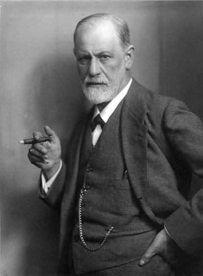

Exploring Human Sexuality
An introduction to the field, its founders, and its cultural dimensions.
1.1 What Is Human Sexuality?
Human sexualityHuman SexualityThe academic field of inquiry concerned with understanding how human beings experience, express, and make meaning of themselves as sexual beings; inherently interdisciplinary, drawing from biology, psychology, sociology, anthropology, history, and more.View in glossary →, as an academic field of inquiry, is concerned with understanding the ways in which human beings experience, express, and make meaning of themselves as sexual beings. It is a discipline that defies simple definition precisely because it touches on nearly every dimension of human life — biological drives, psychological needs, cultural norms, historical context, social structures, and personal identity all converge within it. To study human sexuality is to study what it means to be human.
Human sexuality is fundamentally interdisciplinary. It draws from biology and medicine to understand how our bodies are organized, how hormones function, and how reproduction occurs. It borrows from psychology to examine desire, attraction, identity, and the emotional dimensions of intimate life. It incorporates sociology and anthropology to understand how communities and cultures shape what counts as normal, acceptable, or deviant sexual behavior. And it engages with history, philosophy, and literary studies to trace how ideas about sexuality have evolved across time. This breadth is both a strength and a challenge: human sexuality resists being reduced to any single discipline's framework.
Which disciplines contribute to the interdisciplinary nature of human sexuality as a field of study?
1.2 The Development of Human Sexuality as a Scientific Field
The formal, scientific study of human sexuality is a relatively recent enterprise. For most of recorded human history, considerations around sex were governed by religious doctrine, legal codes, and cultural customs. It was understood as a moral domain rather than a scientific one, and the dominant institutions of Western society — especially the Christian church — wielded enormous authority over what was considered "normal" sexual behavior. Premarital sex, homosexuality, masturbation, and non-procreative sexual acts were viewed as abnormal, and those who engaged in them were often condemned or even jailed.
The shift toward a scientific understanding of sexuality began in the nineteenth century, when European physicians and psychiatrists began cataloguing and classifying sexual behaviors with the same systematic approach they applied to physical illness. Figures such as Richard von Krafft-Ebing, whose 1886 work Psychopathia Sexualis catalogued hundreds of sexual behaviors under the framework of pathology, and Havelock Ellis, whose multi-volume Studies in the Psychology of Sex (published between 1897 and 1928) took a more humanistic and descriptive approach, laid the groundwork for sexuality as an object of scientific inquiry. But it was Sigmund Freud whose work most dramatically placed sexuality at the center of psychological theory — and whose legacy in the field remains both profound and hotly debated.
Sigmund Freud

Sigmund Freud (1856–1939) is arguably the most influential figure in the history of thinking about human sexuality, not because his theories have held up under empirical scrutiny — many have not — but because he fundamentally altered what questions the modern world thought to ask about our sexual lives. Working as a neurologist and psychiatrist in Vienna in the late nineteenth and early twentieth centuries, Freud developed a theory of the mind in which sexuality played a foundational role.
Freud's theory of psychosexual development proposed that children pass through a series of stages — oral, anal, phallic, latency, and genital — in which erogenous zones shift and the child's sexual energies are directed toward different objects and aims. The most controversial of these was the phallic stage, during which Freud argued that children between the ages of 3 and 6 experience unconscious desires for the opposite-sex parent and hostility toward the same-sex parent. He called this the Oedipus complex for boys and the Electra complex. According to Freud, the resolution of these conflicts through identification (mimicry) with the same-sex parent was central to the formation of a child's gender identity (Freud, 1924; McBride & Meltzer, 2023)ReferencesFreud, S. (1924). The dissolution of the Oedipus complex. In J. Strachey (Ed. & Trans.), The standard edition of the complete psychological works of Sigmund Freud (Vol. 19, pp. 173–179). Hogarth Press. | McBride, D. L., & Meltzer, A. L. (2023). Freud's developmental theory. StatPearls. NCBI Bookshelf..
![Infographic titled 'Freud's Psychosexual Stages: A Theory of Early Development.' Five color-coded rows present each stage with its approximate age range, primary erogenous zone, and central developmental conflict: (1) Oral Stage, birth–18 months, erogenous zone: mouth, conflict: weaning; (2) Anal Stage, 18 months–3 years, erogenous zone: anus, conflict: toilet training and learning control; (3) Phallic Stage, 3–6 years, erogenous zone: genitals, conflict: Oedipus/Electra complex — the child experiences desire for the opposite-sex parent and rivalry with the same-sex parent; (4) Latency Stage, 6 years–puberty, erogenous zone: none (dormant), conflict: social and intellectual skills develop while sexual urges are repressed; (5) Genital Stage, puberty onward, erogenous zone: genitals, conflict: maturation of sexual interests and forming intimate relationships. Each row includes a small cartoon illustration.](img/Freud%20Psychosexual%20Stages.png)
Freud also introduced the concept of the libidoLibidoFreud's term for the reservoir of sexual energy he believed drove much of human motivation, creativity, and neurotic conflict.View in glossary → — a reservoir of sexual energy that he believed was the driving force behind much of human motivation, creativity, and neurotic conflict (Freud, 1905)ReferenceFreud, S. (1905). Three essays on the theory of sexuality (J. Strachey, Trans.). Basic Books.. In his view, many psychological symptoms could be traced to the repression of unacceptable sexual wishes or the failure to adequately resolve early psychosexual conflicts. This idea — that the unconscious sexual life has enormous consequences for mental health — was genuinely radical in a Victorian era, which was a time of extreme sexual repression, especially for women.
Yet Freud's framework was riddled with problems that have become increasingly apparent over time. His theories were derived almost entirely from clinical work with a small population of affluent Viennese women, and he never subjected them to systematic empirical testing. His accounts of female sexuality in particular were deeply problematic. His claim that women who experienced clitoral, rather than vaginal, orgasm were sexually immature (Freud, 1905; Gerhard, 2000)ReferencesFreud, S. (1905). Three essays on the theory of sexuality (J. Strachey, Trans.). Basic Books. | Gerhard, J. (2000). Revisiting "The Myth of the Vaginal Orgasm": The female orgasm in American sexual thought and second wave feminism. Feminist Studies, 26(2), 449–476.. He argued that a clitoral orgasm was "childish," and a sign of a "weak ego." These claims have no biological basis and contributed to decades of misinformation about how women can and "should" have orgasms. He also came up with the idea of penis envy — that girls harbor a sense of inferiority in comparison to boys and a deep desire to have their own penis. Clearly, many of Freud's ideas were rooted in the common misogyny of his time.
Freud also largely ignored same-sex desire as a natural variation of human sexuality, classifying homosexuality as a developmental disorder that resulted from poor parenting (Freud, 1905; Drescher, 2015)ReferencesFreud, S. (1905). Three essays on the theory of sexuality (J. Strachey, Trans.). Basic Books. | Drescher, J. (2015). Out of DSM: Depathologizing homosexuality. Behavioral Sciences, 5(4), 565–575.. His framework assumed a heterosexual endpoint to normal development, a bias that would shape how psychologists viewed gay people for decades. Despite these limitations, Freud opened the door to taking sexuality seriously as a psychological phenomenon, insisting that desire, fantasy, and erotic life could not simply be bracketed off from the rest of mental and social existence. His influence on culture, literature, and therapy remains profound even as his specific claims have been largely abandoned or radically revised by contemporary researchers.
Which of the following correctly pairs a psychosexual stage with its primary developmental conflict?
How did Freud's approach to human sexuality demonstrate biases common in his era?
Karen Horney and the Feminist Critiques of Sexual Theory

Karen Horney (pronounced Horn-Eye; 1885–1952), a German-American psychoanalyst who trained in the Freudian tradition before departing from it, offered some of the most incisive and enduring feminist critiques of Freudian sexual theory. Horney challenged Freud on multiple fronts, but her critique of the concept of penis envy was perhaps her most influential contribution. In a series of papers beginning in the 1920s, Horney argued that Freud's account of female psychology was constructed entirely from a male perspective. She pointed out that if girls experienced envy of the male body, it was far more plausibly explained by the social privileges that maleness conferred than by any inherent sense of inferiority. The problem, Horney argued, was not that women lacked penises but that they lived in societies that devalued women's bodies. Freud simply attributed the psychological consequences of that oppression to some kind of "female deficiency." (Horney, 1926)ReferenceHorney, K. (1926). The flight from womanhood: The masculinity complex in women as viewed by men and women. International Journal of Psychoanalysis, 7, 324–339.
Horney also challenged Freud's account of the vaginal orgasm as the mature form of female sexual pleasure, arguing that there was no clinical or biological basis for distinguishing between clitoral and vaginal orgasm (Horney, 1926; Masters & Johnson, 1966)ReferencesHorney, K. (1926). The flight from womanhood. International Journal of Psychoanalysis, 7, 324–339. | Masters, W. H., & Johnson, V. E. (1966). Human sexual response. Little, Brown.. This argument was grounded in Horney's insistence that female sexuality had to be understood on its own terms rather than as a derivative version of male sexuality.
Horney's work prefigured many of the central concerns of feminist psychology and gender studies. She insisted that theories of female psychology should be rooted in the female perspective (rather than a male one). She also helped establish a tradition of criticism of old psychoanalytic ideas, which eventually helped the study of human sexuality break from these antiquated ideas.
Which critique did Karen Horney make about Freud's concept of penis envy?
Evelyn Hooker (1907–1996) later disproved one of Freud's core ideas that homosexuality was a sign of disordered sexual development. Hooker recruited two matched groups of men who were not in therapy — 30 gay men and 30 straight men. She gave all of them three widely used psychological tests and then gave their results to a panel of expert psychologists, asking them to identify which men were gay and to rate each man's overall mental health. Without knowing the men's sexual orientation, the panel could not tell the difference. They rated both groups as equally well-adjusted (Hooker, 1957)ReferenceHooker, E. (1957). The adjustment of the male overt homosexual. Journal of Projective Techniques, 21(1), 18–31.. Her study was the first to show that homosexuality was not inherently linked to mental illness (Drescher, 2015)ReferenceDrescher, J. (2015). Out of DSM: Depathologizing homosexuality. Behavioral Sciences, 5(4), 565–575.. This evidence became a cornerstone of the American Psychiatric Association's decision to remove homosexuality from the official list of mental disorders in 1973 (APA, 1973)ReferenceAmerican Psychiatric Association. (1973). Homosexuality and sexual orientation disturbance: Proposed change in DSM-II, 6th printing, page 44. APA Document Reference No. 730008..
![Infographic titled 'Freud vs. Horney: Contrasting Views on Female Sexuality and Psychology,' with portrait photos of each at the top. Freud's column (left): (1) Penis envy — girls feel inferior and wish to have a penis; (2) Female sexuality as derivative — viewed as a lesser version of men's; (3) Vaginal orgasm as 'mature' — clitoral orgasm seen as immature; (4) Male-centered theory — female experience interpreted through male assumptions. Horney's column (right): (1) Social inequality explains envy — inferiority stems from lower social status, not anatomy; (2) Female psychology on its own terms — women's sexuality is primary and complete; (3) Clitoral/vaginal distinction rejected — pleasure is emotional and relational; (4) Feminist critique — Horney challenged male-centered biases and called for equality in psychology.](img/Freud%20vs%20Horney.png)
Alfred Kinsey and The Turn Toward Empiricism
If Freud gave the study of sexuality its theoretical beginnings, Alfred Kinsey (1894–1956) added its empirical foundations. While Kinsey started out as an entomologist studying wasps, he found himself teaching a course in human sexuality at Indiana University. He quickly found that there was an almost complete lack of scientifically collected information on the sex lives of regular people. Over the next two decades, he sought to change that and his findings shook American society to its core.

Kinsey began conducting face-to-face interviews with Americans about their sex lives, believing he could get more accurate information by building rapport with interviewees. Over the course of nearly 20 years, Kinsey and his team collected sexual histories from over 18,000 Americans. The results were published in two landmark volumes: Sexual Behavior in the Human Male (1948) and Sexual Behavior in the Human Female (1953).
The findings were startling. Kinsey documented that masturbation was nearly universal among men and even common among women. Keep in mind that, at this time, masturbation was seen as being dangerous to one's own health! He found that premarital sex was far more prevalent than was commonly thought in polite society. He also found that extramarital sex was common. Most controversially, Kinsey interviewed many people who admitted to having same-sex sexual experience, documenting that approximately 37 percent of the men he interviewed reported at least one homosexual experience to the point of orgasm during their adult life. A significant proportion of both men and women reported ongoing attraction to members of their own sex. This shocked the world, given that homosexuality was deemed a mental disorder among most in the medical community. How could millions of Americans be gay if it was a mental disorder?
To capture the continuous variation in sexual orientation that his data revealed, Kinsey developed what became known as the Kinsey ScaleKinsey ScaleAlfred Kinsey's seven-point continuum of sexual orientation, ranging from 0 (exclusively heterosexual) to 6 (exclusively homosexual), introduced to capture the spectrum of human sexual attraction rather than treating it as a binary.View in glossary → — a seven-point continuum running from 0 (exclusively heterosexual) to 6 (exclusively homosexual), with 3 representing equal attraction to both sexes (Kinsey et al., 1948)ReferenceKinsey, A. C., Pomeroy, W. B., & Martin, C. E. (1948). Sexual behavior in the human male. W. B. Saunders.. This was a conceptually revolutionary move: rather than treating heterosexuality and homosexuality as discrete categories, Kinsey proposed that sexual orientation was distributed along a spectrum, and that most people fell somewhere between the hetero and homosexual. The scale challenged the binary thinking that had dominated both scientific and popular understanding of sexual orientation. Even today, most people think of sexuality as a binary (straight or LGBT), while researchers have continually found that many individuals' sexuality lies somewhere between these poles.
Kinsey's work has been criticized on both methodological and ethical grounds. His samples were not truly random — they overrepresented prison populations, volunteers, and people already involved in sexual subcultures — raising questions about how representative his findings were (Cochran, Mosteller, & Tukey, 1954; Gebhard & Johnson, 1979)ReferencesCochran, W. G., Mosteller, F., & Tukey, J. W. (1954). Statistical problems of the Kinsey report on sexual behavior in the human male. Journal of the American Statistical Association, 49(267), 673–716. | Gebhard, P. H., & Johnson, A. B. (1979). The Kinsey data: Marginal tabulations of the 1938–1963 interviews conducted by the Institute for Sex Research. Saunders.. Some critics have accused him of inflating estimates of homosexuality by disproportionately sampling gay-friendly networks. His interview methodology, while thorough, was conducted by a small team, and concerns have been raised about the training and consistency of interviewers. Despite these criticisms, Kinsey's fundamental contributions to the scientific study of sex were undeniably transformative. He demonstrated that a rigorous, empirical, non-moralistic science of human sexual behavior was possible and could produce insightful findings. He showed that the gap between public norms and private behavior was enormous — that many Americans were doing "perverse" things that their friends and family were unaware of (such as masturbating!). And he initiated a conversation about the diversity of human sexual expression that has continued to this day.
How did Kinsey's research fundamentally change the understanding of human sexual orientation?
Masters and Johnson: The Physiology of Sexual Response
William Masters (1915–2001) and Virginia Johnson (1925–2013) contributed something that had never before been attempted in systematic scientific research: direct laboratory observation of human sexual response. Working together at Washington University in the late 1950s, Masters and Johnson recruited volunteers to engage in sexual activity — including both masturbation and partnered sex — while they monitored participants via physiological instruments. Their findings, published in Human Sexual Response in 1966, fundamentally transformed scientific understanding of how the body works during sexual arousal and orgasm.

Masters and Johnson's most important contribution was the description of what they called the human sexual response cycle — a model of the physiological changes that occur in the body during sexual activity, organized into four phases: excitement, plateau, orgasm, and resolution. They documented in precise physiological detail what happens to heart rate, blood pressure, breathing, muscle tension, genital engorgement, and skin response across these phases, providing for the first time an empirically grounded, biologically accurate account of sexual response.

Two findings from this research were particularly consequential. First, Masters and Johnson definitively demonstrated that there is no physiological distinction between clitoral and vaginal orgasm in women. The distinction Freud had posited — and which psychoanalysts had maintained for decades — between the "immature" clitoral orgasm and the "mature" vaginal orgasm had no basis in the body's actual physiology. All female orgasms, regardless of how they were triggered, involved the same physiological processes and neurological mechanisms. This finding was a landmark correction of one of the most consequential errors in the history of sexual science. It also helped lessen stigma against women who masturbate, given that clitoral stimulation was no longer viewed as a sign of a "weak ego."
Second, Masters and Johnson documented that women were capable of multiple orgasms — a capacity that men typically do not share. This finding further underscored that the prevailing assumption of male sexuality as the norm against which female sexuality should be compared was not simply biased but empirically wrong. It also busted the myth that men are more sexually advanced than women. In terms of multiple orgasms, women's sexual capacity exceeds men's!
According to Masters and Johnson's research, what did they discover about clitoral and vaginal orgasms in women?
Beyond studying sexual response, Masters and Johnson also made major contributions to…
Beyond their basic research on sexual response, Masters and Johnson pioneered the field of sex therapy, developing treatment approaches for sexual dysfunctions — including erectile dysfunction, premature ejaculation, and difficulties with arousal and orgasm. Their 1970 book Human Sexual Inadequacy introduced these therapeutic approaches to both professional and general audiences and initiated the development of clinical sexology as a recognized medical subspecialty.
Masters and Johnson's work was not without its own significant limitations and controversies. Their laboratory setting, while enabling physiological precision, raised questions about ecological validity — whether sexual response observed by researchers in a lab is even representative of more normal sexual experiences. Their sample, like Kinsey's, was not representative of the general population, overrepresenting white, educated, middle-class individuals who were comfortable enough with sexuality to have sex in front of scientists. And their later work, including their controversial 1979 book Homosexuality in Perspective, which claimed to be able to convert homosexual individuals to heterosexuals through therapy, has been thoroughly discredited and rightly criticized as harmful pseudoscience.
Nevertheless, their foundational research on the physiology of sexual response remains among the most significant empirical contributions to the science of human sexuality. By grounding the study of sexuality in the body's actual responses, Masters and Johnson helped establish the scientific legitimacy of sexology as a discipline.
1.3 Sexual Attitudes and Practices: A Cross-Cultural Perspective
The dramatic variation in sexual attitudes and practices across different societies and eras shows how culture, rather than biology alone, shapes human sexuality. This diversity does not mean that anything goes or that there are no similarities across cultures. There are certain "sexual rules" that appear to exist across societies, such as the near-universal taboo against incest and having sex with the dead. But within these broad regularities, the range of cultural variation is striking, and it strongly suggests that what feels "natural" or obvious about sexuality to members of any given society is often a cultural construction rather than a biological given.
Western Cultural Attitudes Toward Sexuality
Western attitudes toward sexuality — particularly in the United States and Western Europe — have been profoundly shaped by Judeo-Christian religious doctrine. The Christian tradition that dominated Western Europe for well over 1,000 years created ambivalent feelings about the body and sexuality. While it affirmed marriage and procreation as legitimate and worthwhile, it also elevated celibacy as the higher spiritual calling. Christian leaders developed elaborate theologies of sexual sin that classified all non-procreative sexual acts — masturbation, homosexuality, oral sex, contraception — as deeply immoral. This framework linked sexuality to guilt and shame in ways that has persisted into modern day, even among non-Christians.

The Victorian era of the nineteenth century represents a peculiar peak of sexual repression. The official Victorian ethos held that respectable women were essentially asexual. Sexuality was a regrettable and embarrassing necessity for procreation, but women certainly shouldn't enjoy sex. Sexual desires were to be distrusted, discouraged, and actively repressed. This was a time when doctors commonly believed that masturbation could literally sicken the body, causing blindness, seizures, and "insanity."
Video 1.1. Dating in the Victorian era in America and in Britain meant navigating through a fog of modesty, prudence, ritual, corsets, and top hats.
Contemporary Western attitudes toward sexuality are considerably more open and diverse than those of the Victorian era, shaped by the social upheavals of the twentieth century, including the two world wars, the feminist movement, the sexual revolution of the 1960s and 1970s, the AIDS crisis of the 1980s and 1990s, and the ongoing struggle for LGBTQ+ rights. Several broad patterns characterize contemporary Western sexual culture, though with significant variation across countries and within them.
European Western nations, particularly those in Scandinavia and the Netherlands, tend to hold relatively permissive attitudes toward sexuality. Sweden introduced comprehensive sex education in its public schools as early as 1955 and has maintained it as a mandatory part of their children's schooling beginning around age six. Swedish sex education covers not only reproductive biology and contraception but also consent, pleasure, and diversity of sexual expression. The outcomes associated with this approach have been notable: Sweden maintains some of the world's lowest rates of teenage pregnancy and sexually transmitted infections among industrialized nations (Guttmacher Institute, 2010; Lindberg, Santelli, & Desai, 2016)ReferencesGuttmacher Institute. (2010). Facts on American teens' sources of information about sex. Guttmacher Institute. | Lindberg, L. D., Santelli, J. S., & Desai, S. (2016). Understanding the decline in adolescent fertility in the United States, 2007–2012. Journal of Adolescent Health, 59(5), 577–583.. Research comparing Scandinavian and American students consistently finds that Scandinavian students express more permissive attitudes toward premarital sex and report greater comfort discussing sexual topics openly (Grose, 2007)ReferenceGrose, T. K. (2007, March 18). Straight facts about the birds and bees. U.S. News and World Report..

The United States occupies a distinctive position within the Western world — more economically developed and globally influential than most nations, yet considerably more conservative in its sexual attitudes than most other Western nations. In a major cross-national survey of 24 countries, nearly 30 percent of Americans stated that "premarital sex is always wrong," compared to an average of 17 percent across other countries surveyed. American disapproval rates for sex before age 16, extramarital sex, and homosexuality each rank 11–13 percentage points higher than cross-national averages (Widmer, Treas, & Newcomb, 1998; Barber, 2018)ReferencesWidmer, E. D., Treas, J., & Newcomb, R. (1998). Attitudes toward nonmarital sex in 24 countries. Journal of Sex Research, 35(4), 349–358. | Barber, N. (2018). Cross-national variation in attitudes to premarital sex: Economic development, disease risk, and marriage strength. Cross-Cultural Research, 52(3), 259–275.. This relative conservatism reflects the continuing influence of conservative religious traditions and a persistent cultural ambivalence about sexuality.
Sex education in the United States illustrates this ambivalence well. Unlike Sweden, the United States has no national sex education curriculum; standards vary dramatically from state to state and even school district to school district. For much of the late twentieth and early twenty-first centuries, federal funding was directed toward abstinence-only or abstinence-until-marriage programs that, by law, could not discuss contraception except to emphasize its failure rates (Santelli et al., 2017)ReferenceSantelli, J. S., Kantor, L. M., Grilo, S. A., Speizer, I. S., Lindberg, L. D., Heitel, J., … & Ott, M. A. (2017). Abstinence-only-until-marriage: An updated review of U.S. policies and programs and their impact. Journal of Adolescent Health, 61(3), 273–280.. The research evidence consistently demonstrated that these programs did not delay sexual initiation among young people and actually lead to higher rates of teen pregnancy and STIs (Santelli et al., 2006)ReferenceSantelli, J., Ott, M. A., Lyon, M., Rogers, J., Summers, D., & Schleifer, R. (2006). Abstinence and abstinence-only education: A review of U.S. policies and programs. Journal of Adolescent Health, 38(1), 72–81.. Despite this evidence, abstinence-only programs continue to receive hundreds of millions of dollars in federal support, reflecting the degree to which sex policy in the United States is driven by ideological rather than real data.
According to the Victorian ethos described in the passage, respectable women were expected to relate to sexuality in which of the following ways?
A persistent feature of American sexual culture is what sociologists call the sexual double standardSexual Double StandardThe differential application of sexual norms to men versus women, by which sexual behavior that is tolerated or praised in men is condemned in women.View in glossary → — the differential application of sexual norms to men vs. women. Researcher Ira Reiss, who pioneered the sociological study of American sexual norms, documented in the 1960s that premarital sex was generally tolerated for men to engage in, but absolutely condemned for women (Reiss, 1960)ReferenceReiss, I. L. (1960). Premarital sexual standards in America. Free Press.. Buss and colleagues (2020) surveyed 2,751 people across 14 countries and found that being sexually promiscuous greatly lowers the perceived status of women, compared to men (Buss et al., 2020)ReferenceBuss, D. M., Durkee, P. K., Shackelford, T. K., Schmitt, D. P., Bowdle, B. F., Troisi, A., … & Barr, A. B. (2020). Human status criteria: Sex differences and similarities across 14 nations. Journal of Personality and Social Psychology, 119(5), 979–998.. You can also see this double standard in the type of language used to describe promiscuous women vs. men. Men who sleep around are known as "players," "studs," and "chads," while women who do the same are commonly called "sluts," "skanks," and "whores." Although, studies of more gender-equal countries find that such biases have weakened over time. A large, nationally representative sample of Norwegian adults found no differences in how women and men were judged when it came to their number of sexual partners (Kennair et al., 2023)ReferenceKennair, L. E. O., Thomas, A. G., Buss, D. M., & Bendixen, M. (2023). Examining the sexual double standards and hypocrisy in partner suitability appraisals within a Norwegian sample. Evolutionary Psychology, 21(1)..

According to the research cited in the passage, what has been the outcome of abstinence-only sex education programs in the United States?
Eastern and Non-Western Cultural Attitudes Toward Sexuality
The diversity of sexual attitudes across Eastern cultures is at least as great as within the Western world. In many East Asian societies, including China, Japan, and South Korea, sexuality has historically been governed by a complex interplay of Confucian ethics, which emphasized social harmony, hierarchical obligation, and the restraint of individual desire (Fincham et al., 2024; Gao et al., 2012)ReferencesFincham, F. D., Beach, S. R. H., & Davila, J. (2024). Romantic relationships and attitudes in Asian emerging adults. Emerging Adulthood. Advance online publication. | Gao, E., Lou, C., Cheng, Y., Emerson, M. R., & Zabin, L. S. (2012). The association between age at sexual debut and sexual risk behaviors in three Asian cities. Journal of Adolescent Health, 50(3), S87–S95.. Confucian thought did not frame sexuality as inherently sinful the way Christians did, but it did subordinate individual sexual desire to familial obligations. Premarital sex, particularly for women, is still strongly discouraged in these countries. Even public displays of affection have traditionally been seen as inappropriate.
A major cross-cultural study of mate preferences in 37 countries found that non-Western societies including China, Iran, and India, placed significantly higher value on chastity in a potential partner than did Western European countries such as France, Sweden, and the Netherlands (Buss, 1989)ReferenceBuss, D. M. (1989). Sex differences in human mate preferences: Evolutionary hypothesis tested in 37 cultures. Behavioral and Brain Sciences, 12(1), 1–49.. In China and Iran, average scores for the importance of chastity in a potential mate were among the highest in the sample, while in Sweden, Norway, and Finland they were among the lowest. These findings reflect genuine cultural differences in how premarital sexual experience is understood — as a loss of value in the marriage market in some societies, while basically irrelevant in others.
![World map infographic titled 'Cross-Cultural Variations in Sexual Attitudes.' Countries are color-coded: green (more permissive), yellow (moderate), red-orange (more restrictive). Callout boxes highlight Sweden (comprehensive sex education and acceptance of diverse sexualities), Norway (weaker sexual double standards), the United States (more conservative than other Western nations), and China, Japan, and South Korea (Confucian traditions emphasizing modesty and traditional gender roles). Key takeaway: 'Attitudes about sexuality are deeply shaped by history, religion, education, law, and social norms. There is no single normal — only cultural variation.'](img/Cross-cultural%20Variation%20in%20Sexual%20Attitudes.png)
These patterns are not static, however, and rapid social change in many East Asian societies has produced significant shifts in sexual attitudes, particularly among younger urban generations. Research conducted in China in the decades since the economic reforms of the 1980s has documented substantial increases in premarital sexual activity, greater acceptance of cohabitation before marriage, and increased openness about sexual diversity (Fincham et al., 2024; Li et al., 2024)ReferencesFincham, F. D., Beach, S. R. H., & Davila, J. (2024). Romantic relationships and attitudes in Asian emerging adults. Emerging Adulthood. Advance online publication. | Li, Z., Wu, J., & Zhu, H. (2024). Social media use and attitudes toward premarital sex in China: A chain-mediating analysis. Sexuality & Culture, 28, 1–22..
1.4 Why Is It Important to Study Sexuality?
Why study human sexuality? This may seem an odd question in a textbook devoted to the topic, but it's well worth asking, especially if you hope to get the most out of this text. As you'll read below, the scientific study of sex offers substantial benefits, not only to individuals but to whole societies.
Personal Benefits: Health, Pleasure, and Self-Knowledge
The most immediate benefit of sexual literacySexual LiteracyA working knowledge of one's own and others' sexuality, encompassing anatomy, physiology, psychology, social context, and communication skills, enabling informed decisions about sexual health and relationships.View in glossary → — defined as a working knowledge of one's own and others' sexuality, including anatomy, physiology, psychology, and social context — is better health. Individuals who understand how their bodies work, how sexual transmission of infection occurs, and how to use contraceptives are better equipped to make decisions that protect their physical well-being. The relationship between sexual knowledge and sexual health outcomes is well established: comprehensive sex education that includes accurate information about contraception is associated with lower rates of unintended pregnancy and sexually transmitted infections (Santelli et al., 2006)ReferenceSantelli, J., Ott, M. A., Lyon, M., Rogers, J., Summers, D., & Schleifer, R. (2006). Abstinence and abstinence-only education: A review of U.S. policies and programs. Journal of Adolescent Health, 38(1), 72–81..

Beyond health in the narrow sense, sexual literacy contributes to the capacity for pleasure and intimacy. Understanding one's own body — including how arousal works, what kinds of touch feel good, and what conditions support sexual growth — enables both greater personal satisfaction and more authentic sexual relationships with partners. A significant portion of sexual dissatisfaction in relationships stems not from incompatibility but from poor communication: partners who have not developed the language or the comfort to talk openly about what they want, need, or enjoy. Courses in human sexuality can provide both the vocabulary and the psychological permission for these conversations to happen.
Sexual self-knowledge also includes understanding one's own identity — sexual orientation, gender identity, and how these interact with broader aspects of who we are. For individuals who are lesbian, gay, bisexual, transgender, or otherwise queer, developing an accurate and affirming understanding of their sexuality in a world that has often pathologized or condemned it can be a genuinely life-saving process. Research consistently demonstrates that LGBTQ+ youth who have access to accurate and affirming information about sexuality show significantly better mental health outcomes than those who do not (CDC, 2011)ReferenceCenters for Disease Control and Prevention. (2011). Lesbian, gay, bisexual, and transgender health. Retrieved from http://www.cdc.gov/lgbthealth/youth.htm. Gaining this knowledge is not a luxury but a matter of genuine urgency for many people.
Social and Public Health Imperatives
At the societal level, the importance of systematic knowledge about human sexuality can hardly be overstated. Decisions about sex education curricula, public health campaigns, reproductive health policy, and the legal treatment of sexual minorities are made continuously at every level of government. When those decisions are based on accurate knowledge, their outcomes tend to be better — for individuals and for communities. When they are based on ideology, moral panic, or misinformation, the consequences can be severe.
The history of HIV/AIDS provides a stark illustration. In the early years of the epidemic, a combination of political reluctance to discuss homosexuality, religious opposition to condom use, and stigma surrounding LGBTQ+ populations led to delayed and inadequate public health responses that cost many lives (Shilts, 1987; CDC, 2001)ReferencesShilts, R. (1987). And the band played on: Politics, people, and the AIDS epidemic. St. Martin's Press. | Centers for Disease Control and Prevention. (2001). HIV and AIDS — United States, 1981–2000. Morbidity and Mortality Weekly Report, 50(21), 430–434.. Communities that overcame this reluctance and provided accurate, non-judgmental information about transmission and prevention were able to slow the epidemic's spread significantly. The lesson — that accurate sexual knowledge saves lives — was bought at enormous cost.

Debates about contraception, abortion, and fertility treatment are often conducted with limited attention to the real-life evidence about what happens when different policies are implemented. Access to effective contraception reduces unintended pregnancy, abortion rates, and maternal mortality; this is not a matter of opinion but of well-established evidence from decades of research (Guttmacher Institute, 2010; Cleland et al., 2012)ReferencesGuttmacher Institute. (2010). Facts on American teens' sources of information about sex. Guttmacher Institute. | Cleland, J., Conde-Agudelo, A., Peterson, H., Ross, J., & Tsui, A. (2012). Contraception and health. The Lancet, 380(9837), 149–156.. Understanding this evidence does not resolve the underlying ethical disagreements about reproductive rights, but it does establish a foundation of fact from which those disagreements can be more honestly debated.
Toward Sexual Literacy
The concept of sexual literacy captures much of what a course in human sexuality aims to cultivate. Sexual literacy encompasses knowledge of anatomy and physiology, understanding of sexual response and diversity, familiarity with the social and cultural forces that shape sexual experience, skills in communication and consent, and awareness of the rights and resources available to support sexual health and well-being.
![Colorful infographic titled 'Sexual Literacy: The knowledge, skills, and awareness we all need for healthy, respectful, and fulfilling sexual lives.' An illustration shows students reading books together. Five numbered components: (1) Knowledge of Anatomy and Physiology — understand how our bodies work; (2) Understanding of Sexual Response and Diversity — learn about the sexual response cycle and the range of sexual orientations and gender identities; (3) Awareness of Social and Cultural Influences — recognize how culture, media, family, and religion shape beliefs and experiences; (4) Skills in Communication and Consent — communicate openly, set boundaries, and give enthusiastic consent; (5) Awareness of Rights and Resources — know your rights and where to find accurate information and health care. Text reads: 'Knowledge empowers. Respect connects. Choice matters.'](img/Sexual%20Literacy.png)
This kind of literacy is not simply academic. It has direct and practical consequences for the quality of people's lives, the health of their relationships, and the well-being of the communities in which they live. A person who understands how sexually transmitted infections are transmitted and prevented is better positioned to protect themselves and their partners. A person who can communicate clearly about their desires, limits, and needs is better positioned to have satisfying sexual relationships. A person who understands the social construction of sexual norms is better positioned to critically evaluate the pressures placed on their sexuality by culture, religion, or peer groups.
The chapters that follow approach human sexuality with the seriousness and rigor it deserves — drawing on biology, psychology, sociology, anthropology, and history to build as complete and accurate a picture as current knowledge allows. This book also approaches these topics with humility. The field of human sexuality is one in which our understanding continues to evolve, in which previous certainties have repeatedly been overturned. Facts and figures in this book may later be proven to be inaccurate. As such, this text will be regularly updated to ensure the most up-to-date information we have available.
To get the most out of this book (and class), it's best to approach this material with a sense of openness and curiosity. There may be certain findings or perspectives that rub you the wrong way, and that's totally fine! This book doesn't aim to change your opinions about strongly held beliefs and values. However, by presenting evidence about sex as it truly is, perhaps you will come to view your beliefs and values in more complex and nuanced ways.
Learning about things you do not yet know much about, building your sexual literacy, and approaching the sexuality of others with curiosity and respect are practices that will serve you well — not just in this course, but throughout your life.
How does the concept of sexual literacy enhance individuals' sexual well-being and relationship quality?
Study Guide
After reading Chapter 1, you should be able to answer each of the questions below. Use your own words where possible, and support your answers with examples or evidence from the text.
1.1 What Is Human Sexuality?
- In your own words, define human sexuality as an academic field. Why is it considered an interdisciplinary discipline, and which fields of study does it draw from?
- What does it mean to say that human sexuality "resists being reduced to any single discipline's framework"? Give an example of a question about sexuality that would require insights from at least two different academic disciplines to answer fully.
1.2 The Development of Human Sexuality as a Scientific Field
- Before the nineteenth century, what institutions primarily governed attitudes about sex, and how did they frame sexual behavior? How did this change with the emergence of a scientific approach to sexuality?
- Describe Freud's theory of psychosexual development, including the five stages and the Oedipus/Electra complex. Then identify at least two major criticisms of Freud's sexual theories, explaining why these claims have been rejected by modern researchers.
- How did Karen Horney challenge Freud's concept of penis envy, and what alternative explanation did she offer for any observed differences between men and women? How did her work influence the broader study of female sexuality?
- Describe Evelyn Hooker's landmark 1957 study. What was her research design, what did she find, and what were the long-term consequences of her findings for how psychology classified homosexuality?
- Explain Alfred Kinsey's major contributions to sex research, including the Kinsey Scale. What were some of his most controversial findings, and what methodological criticisms have been raised about his work?
- What were the two most significant empirical findings from Masters and Johnson's laboratory research on the human sexual response cycle, and why were these findings considered landmark corrections to earlier scientific and cultural assumptions? Include the four phases of the sexual response cycle in your answer.
1.3 Sexual Attitudes and Practices: A Cross-Cultural Perspective
- How have Judeo-Christian traditions shaped Western attitudes toward sexuality? What specific types of sexual behavior were condemned, and what emotional associations with sexuality did this tradition cultivate that persist even today?
- Compare and contrast Swedish and American approaches to sex education. What outcomes are associated with each approach, and what does this comparison suggest about the relationship between ideology and public health policy?
- Define the sexual double standard and describe the evidence supporting its existence in American culture, including specific language examples from the chapter. Under what cultural conditions does this double standard appear to weaken?
- How do Confucian ethics shape attitudes toward sexuality in many East Asian societies, and how do these differ from the Christian framework that shaped Western sexual culture? What evidence does the chapter provide that these attitudes are shifting in countries like China?
1.4 Why Is It Important to Study Sexuality?
- Define sexual literacy as the chapter uses the term. What broad domains does it encompass, and why is it described as having "direct and practical consequences" rather than being merely academic?
- Using the HIV/AIDS epidemic as a case study, explain how incomplete sexual knowledge and political or moral reluctance to discuss sexuality can have serious public health consequences. What lesson does this example illustrate?
- The chapter argues that studying human sexuality requires approaching the material with "openness and curiosity." Why might this be especially important in a field where personal values and scientific evidence sometimes come into tension? Do you think it is possible to learn about sexuality objectively while still holding strong personal values? Explain your reasoning.
Key Terms
- Human Sexual Response Cycle
- Masters and Johnson's model of the physiological changes that occur during sexual activity, organized into four phases: excitement, plateau, orgasm, and resolution.
- Human Sexuality
- The academic field of inquiry concerned with understanding how human beings experience, express, and make meaning of themselves as sexual beings; inherently interdisciplinary, drawing from biology, psychology, sociology, anthropology, history, and more.
- Kinsey Scale
- Alfred Kinsey's seven-point continuum of sexual orientation, ranging from 0 (exclusively heterosexual) to 6 (exclusively homosexual), introduced to capture the spectrum of human sexual attraction rather than treating it as a binary.
- Libido
- Freud's term for the reservoir of sexual energy he believed drove much of human motivation, creativity, and neurotic conflict.
- Oedipus Complex
- In Freudian theory, a child's unconscious desire for the opposite-sex parent and rivalry with the same-sex parent during the phallic stage of psychosexual development.
- Sexual Double Standard
- The differential application of sexual norms to men versus women, by which sexual behavior that is tolerated or praised in men is condemned in women.
- Sexual Literacy
- A working knowledge of one's own and others' sexuality, encompassing anatomy, physiology, psychology, social context, and communication skills, enabling informed decisions about sexual health and relationships.
References
- American Psychiatric Association. (1973). Homosexuality and sexual orientation disturbance: Proposed change in DSM-II, 6th printing, page 44. APA Document Reference No. 730008.
- Barber, N. (2018). Cross-national variation in attitudes to premarital sex: Economic development, disease risk, and marriage strength. Cross-Cultural Research, 52(3), 259–275.
- Buss, D. M. (1989). Sex differences in human mate preferences: Evolutionary hypothesis tested in 37 cultures. Behavioral and Brain Sciences, 12(1), 1–49.
- Buss, D. M., Durkee, P. K., Shackelford, T. K., Schmitt, D. P., Bowdle, B. F., Troisi, A., … & Barr, A. B. (2020). Human status criteria: Sex differences and similarities across 14 nations. Journal of Personality and Social Psychology, 119(5), 979–998.
- Centers for Disease Control and Prevention. (2011). Lesbian, gay, bisexual, and transgender health. Retrieved from http://www.cdc.gov/lgbthealth/youth.htm
- Cleland, J., Conde-Agudelo, A., Peterson, H., Ross, J., & Tsui, A. (2012). Contraception and health. The Lancet, 380(9837), 149–156.
- Cochran, W. G., Mosteller, F., & Tukey, J. W. (1954). Statistical problems of the Kinsey report on sexual behavior in the human male. Journal of the American Statistical Association, 49(267), 673–716.
- Drescher, J. (2015). Out of DSM: Depathologizing homosexuality. Behavioral Sciences, 5(4), 565–575.
- Ellis, H. (1897–1928). Studies in the psychology of sex (Vols. 1–7). F. A. Davis.
- Fincham, F. D., Beach, S. R. H., & Davila, J. (2024). Romantic relationships and attitudes in Asian emerging adults. Emerging Adulthood. Advance online publication.
- Freud, S. (1905). Three essays on the theory of sexuality (J. Strachey, Trans.). Basic Books.
- Freud, S. (1924). The dissolution of the Oedipus complex. In J. Strachey (Ed. & Trans.), The standard edition of the complete psychological works of Sigmund Freud (Vol. 19, pp. 173–179). Hogarth Press.
- Gao, E., Lou, C., Cheng, Y., Emerson, M. R., & Zabin, L. S. (2012). The association between age at sexual debut and sexual risk behaviors in three Asian cities. Journal of Adolescent Health, 50(3), S87–S95.
- Gebhard, P. H., & Johnson, A. B. (1979). The Kinsey data: Marginal tabulations of the 1938–1963 interviews conducted by the Institute for Sex Research. Saunders.
- Gerhard, J. (2000). Revisiting "The Myth of the Vaginal Orgasm": The female orgasm in American sexual thought and second wave feminism. Feminist Studies, 26(2), 449–476.
- Grose, T. K. (2007, March 18). Straight facts about the birds and bees. U.S. News and World Report.
- Guttmacher Institute. (2010). Facts on American teens' sources of information about sex. Guttmacher Institute.
- Hooker, E. (1957). The adjustment of the male overt homosexual. Journal of Projective Techniques, 21(1), 18–31.
- Horney, K. (1926). The flight from womanhood: The masculinity complex in women as viewed by men and women. International Journal of Psychoanalysis, 7, 324–339.
- Horney, K. (1939). New ways in psychoanalysis. W. W. Norton.
- Kennair, L. E. O., Thomas, A. G., Buss, D. M., & Bendixen, M. (2023). Examining the sexual double standards and hypocrisy in partner suitability appraisals within a Norwegian sample. Evolutionary Psychology, 21(1).
- Kinsey, A. C., Pomeroy, W. B., & Martin, C. E. (1948). Sexual behavior in the human male. W. B. Saunders.
- Kinsey, A. C., Pomeroy, W. B., Martin, C. E., & Gebhard, P. H. (1953). Sexual behavior in the human female. W. B. Saunders.
- Krafft-Ebing, R. von (1886). Psychopathia sexualis. Enke.
- Li, Z., Wu, J., & Zhu, H. (2024). Social media use and attitudes toward premarital sex in China: A chain-mediating analysis. Sexuality & Culture, 28, 1–22.
- Lindberg, L. D., Santelli, J. S., & Desai, S. (2016). Understanding the decline in adolescent fertility in the United States, 2007–2012. Journal of Adolescent Health, 59(5), 577–583.
- Masters, W. H., & Johnson, V. E. (1966). Human sexual response. Little, Brown.
- Masters, W. H., & Johnson, V. E. (1970). Human sexual inadequacy. Little, Brown.
- McBride, D. L., & Meltzer, A. L. (2023). Freud's developmental theory. StatPearls. NCBI Bookshelf.
- Reiss, I. L. (1960). Premarital sexual standards in America. Free Press.
- Santelli, J., Ott, M. A., Lyon, M., Rogers, J., Summers, D., & Schleifer, R. (2006). Abstinence and abstinence-only education: A review of U.S. policies and programs. Journal of Adolescent Health, 38(1), 72–81.
- Santelli, J. S., Kantor, L. M., Grilo, S. A., Speizer, I. S., Lindberg, L. D., Heitel, J., … & Ott, M. A. (2017). Abstinence-only-until-marriage: An updated review of U.S. policies and programs and their impact. Journal of Adolescent Health, 61(3), 273–280.
- Shilts, R. (1987). And the band played on: Politics, people, and the AIDS epidemic. St. Martin's Press.
- Widmer, E. D., Treas, J., & Newcomb, R. (1998). Attitudes toward nonmarital sex in 24 countries. Journal of Sex Research, 35(4), 349–358.